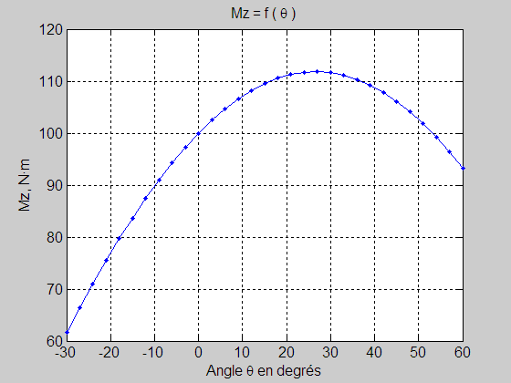

Maximum d'une courbe lisse
Contents
clear; clc; close all; Mz = load('Mz.txt');
Graphique
plot(-30:3:60,Mz,'.b-'); grid on; xlabel('Angle \theta en degrés', 'FontSize',12) ylabel('Mz, N·m', 'FontSize',12); title('Mz = f ( \theta )', 'FontSize',12); set(gca,'FontSize',12); axis([-30,+60,60,120]);

Boucle while
i = 1; while(Mz(i+1)> Mz(i)) % calcul brut i=i+1; end angle = -30 + 3*(i-1); fprintf('\nMz(i-1)= %.2f Nm,',Mz(i-1)); fprintf(' angle : %.0f°\n',angle-3); fprintf(' Mz(i)= %.2f Nm,',Mz(i)); fprintf(' angle : %.0f°',angle); fprintf(', maximum.\n'); fprintf('Mz(i+1)= %.2f Nm,',Mz(i+1)); fprintf(' angle : %.0f°\n',angle+3);
Mz(i-1)= 111.69 Nm, angle : 24° Mz(i)= 111.80 Nm, angle : 27°, maximum. Mz(i+1)= 111.60 Nm, angle : 30°
Boucle for
iMax = 1; for i = 1:length(Mz) if(Mz(i)>Mz(iMax)) iMax = i; end end angle = -30 +3*(iMax-1); fprintf('\nMz(i-1)= %.2f Nm,',Mz(iMax-1)); fprintf(' angle : %.0f°\n',angle-3); fprintf(' Mz(i)= %.2f Nm,',Mz(iMax)); fprintf(' angle : %.0f°',angle); fprintf(', maximum.\n'); fprintf('Mz(i+1)= %.2f Nm,',Mz(iMax+1)); fprintf(' angle : %.0f°\n',angle+3);
Mz(i-1)= 111.69 Nm, angle : 24° Mz(i)= 111.80 Nm, angle : 27°, maximum. Mz(i+1)= 111.60 Nm, angle : 30°